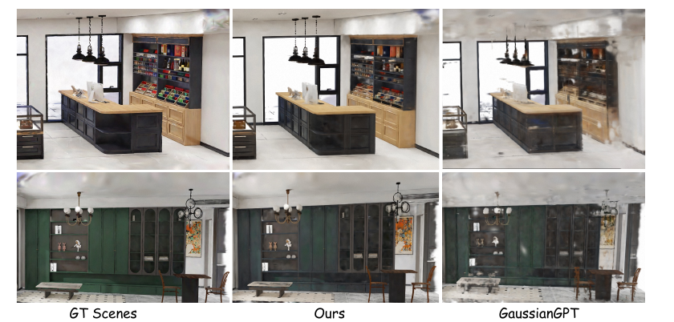
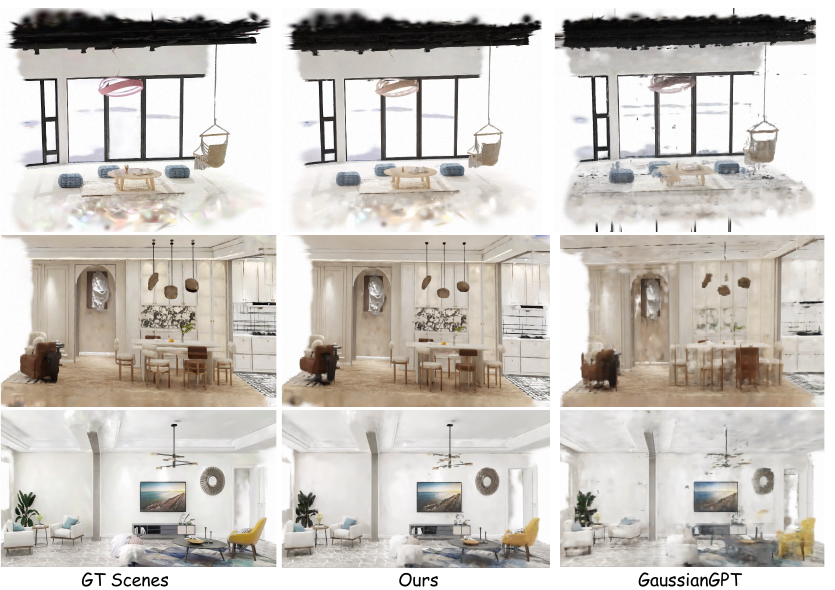

Scene Reconstruction
We compare TriFold against Can3Tok, DiffGS, and GaussianGPT under the same scene-level training and evaluation protocol. TriFold achieves the best results across all metrics, improving PSNR over GaussianGPT by 5.15 dB while reducing LPIPS and Chamfer Distance.
| Method | PSNR ↑ | SSIM ↑ | LPIPS ↓ | CD (×103) ↓ |
|---|---|---|---|---|
| Can3Tok | 4.53 | 0.012 | 0.920 | 10.96 |
| DiffGS | 12.43 | 0.719 | 0.374 | 3.21 |
| GaussianGPT | 21.40 | 0.856 | 0.157 | 2.62 |
| TriFold (Ours) | 26.55 | 0.913 | 0.088 | 2.23 |
Quantitative comparison with existing 3D Gaussian representation methods. Best results are in bold, second-best are underlined.

Qualitative VAE reconstruction comparison. Compared with GaussianGPT, TriFold better captures scene geometry and appearance.

Adaptive 3DGS allocation. The decoder retains a content-dependent number of Gaussians per occupied voxel (heatmap, right), instead of a fixed per-cell budget.

Additional VAE reconstructions. Under the identical evaluation setup, TriFold preserves more visible layout, appearance, and fine-grained local structures.